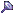

New Action Rule/Edit Action Rule Dialog
You access this dialog from the Manage Rules dialog, Action tab:
- New button (launches New Action Rule dialog)
- Edit button (launches Edit Action Rule dialog)
The New Action Rule/Edit Action Rule dialog is used to create/edit resource handling rules. The same dialog is used for creating a new Action Rule and editing an existing Action Rule. The only difference to the look of the dialog is the title.
New Action Rule and Edit Action Rule dialogs
Dialog Components
Rule Name Field
Field to specify/edit the rule name.
Activate at
Field which specifies when the rule is to be activated.
Category is Assigned
The rule will be applied when a Category is assigned to the resource.
Resource is received
The rule will be applied when new items appear in Omea.
Active for
Field to set for which type of resources the rule is to be applied. This field is, actually, a link to call another dialog - Choose Resource Types.
Conditions/Exceptions
The fields are used to set conditions/exceptions for the rule to be activated/skipped, respectively. Set conditions/exceptions are listed in the corresponding fields.
The conditions are shown as short sentences. Some of the sentences have a hyperlink phrase inside. Pressing the link shows a dialog to enter some text/value for the condition.
Press the Add button to add new condition/exception. Press Delete ( ) in the conditions/exceptions field to delete the selected condition/exception in the list.
) in the conditions/exceptions field to delete the selected condition/exception in the list.
Pressing Add button calls the Select Condition(s) dialog. The dialog is similar for both Conditions and Exceptions areas and includes several groups of conditions.
Conditions which the rule already includes are automatically removed from the list of the Select Condition(s) dialog.
Actions
The field is used to set actions if the the rule condition/exception is met. Set actions are listed in the corresponding tabs.
The actions are shown as short sentences. Some of the sentences have a hyperlink phrase inside. Pressing the link shows a dialog to enter some text/value for the action.
Press the Add button to add new action. Press Remove to delete the selected action in the list.
Pressing Add button call the Select Rule Action(s) dialog. It consists of several actions. To select an action, select the check box next to it. Actions which the rule already includes are not shown.
Show/Hide Buttons
You can use the Show () and Hide () buttons to expand or collapse the Conditions or Exceptions fields.
Pins
You can now use pins if you want Omea to reuse the conditions which you have once defined in any of the dialogs for defining rules. To pin the condition, just click the Pin button (). Once you pin some condition, it will always appear in the Rules Manager dialog if you click the New button in appropriate tab.
Pined Condition in the New Tray Icon Rule dialog
The prepinned conditions are not intended for existing in Omea “forever” and you can easily delete them by pressing the Delete button in the Conditions field but you may find them rather useful when you become more familiar with the Rules.
If you often use some condition or exception , you can easily pin it for later use by pressing the button in order not to specify it again in the future.
See also: